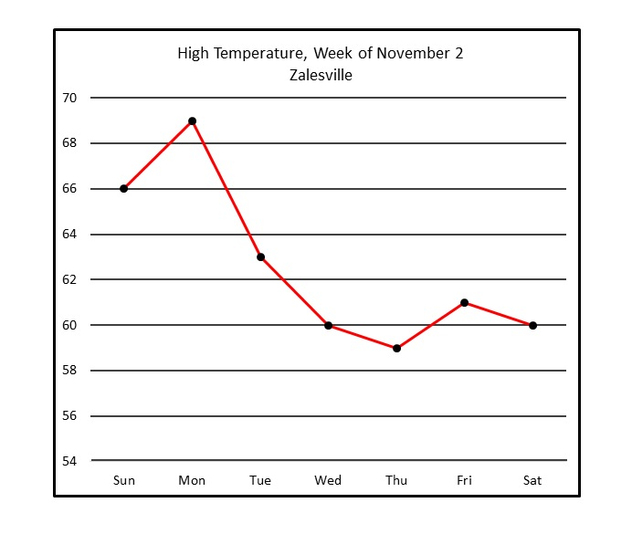

Number of Users Everyday

TODO: results here.
Social networks have changed the way people communicate with each other. Today the world is a lot more connected than it was before. People are also more open towards voicing their opinions regarding issues of their interests. These issues can be related to sports, careers, politics, art, etc. Social network websites like Twitter and Facebook provide great resources to learn about the preferences and interests of people in different demographics. Based on those interests and preferences, it’s easy to know about the sentiments and the location of the people. The data collected from these social networking websites is mostly in the form of raw text, but based on the context it’s easy to know the sentiments and opinions of people residing in different demographics. Our goal for the project is to gather, group and analyze such text data and provide meaningful insights in the form of visualizations. For our project we have decided to work with twitter data which was collected for over a week. Tweets are complex and have many different attributes. It would be very interesting to visualize such data and discover any patterns in terms of how people tweet, where they tweet and when they tweet.
1. How many people are tweeting in different states depending on time? 2. What are the trending topics on twitter? 3. Are there sentiment value differences based on different states in United States?
By using the visualizations for twitter data, we can learn a summary of situations happening throughout the country as well as how twitter users feel on these situations from the state-by-state sentiment analysis. Also, we can learn the times when twitter users most used and least used based on time of the day in different states. These visualizations can highly benefit companies as they can learn the time most twitter users are active, things people are interested, etc., and answer the questions for whom they should advertise their products, when and where, etc. These can also give information to anyone who are interested in learning what’s happening on twitter in a minute.
Source: The twitter data comes from a project of the cse530s class. A script has been implemented to programmatically stream tweets from twitter streaming APIs. Approximately 1 million tweets have been downloaded for over a week. We plan to use the same script to stream the data for a longer period of time because we want to visualize its time dependence. We will also need county and state boundary data to do GIS visualization for the tweets. This data is also from cse530s class and it is downloaded from NHGIS. Scrapting Method: Data Cleanup: